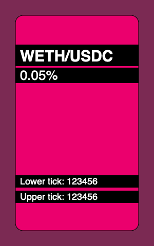
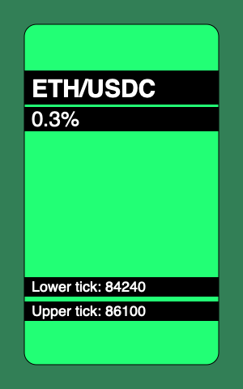
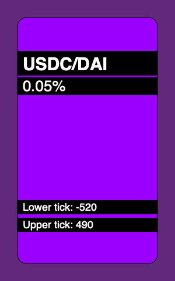

NFT渲染器
现在我们需要构建一个NFT渲染器：这是一个库，用于处理NFT管理器合约中的tokenURI调用。它将为每个铸造的token渲染JSON元数据和SVG。正如我们之前讨论的，我们将使用数据URI格式，这需要base64编码——这意味着我们需要在Solidity中使用base64编码器。但首先，让我们看看我们的token会是什么样子。
SVG模板
我构建了这个简化版的Uniswap V3 NFT：

以下是它的代码：
<svg xmlns="http://www.w3.org/2000/svg" viewBox="0 0 300 480">
<style>
.tokens {
font: bold 30px sans-serif;
}
.fee {
font: normal 26px sans-serif;
}
.tick {
font: normal 18px sans-serif;
}
</style>
<rect width="300" height="480" fill="hsl(330,40%,40%)" />
<rect x="30" y="30" width="240" height="420" rx="15" ry="15" fill="hsl(330,90%,50%)" stroke="#000" />
<rect x="30" y="87" width="240" height="42" />
<text x="39" y="120" class="tokens" fill="#fff">
WETH/USDC
</text>
<rect x="30" y="132" width="240" height="30" />
<text x="39" y="120" dy="36" class="fee" fill="#fff">
0.05%
</text>
<rect x="30" y="342" width="240" height="24" />
<text x="39" y="360" class="tick" fill="#fff">
Lower tick: 123456
</text>
<rect x="30" y="372" width="240" height="24" />
<text x="39" y="360" dy="30" class="tick" fill="#fff">
Upper tick: 123456
</text>
</svg>
这是一个简单的SVG模板，我们将创建一个Solidity合约来填充这个模板中的字段，并在tokenURI中返回它。每个token将唯一填充的字段包括：
-
背景颜色，在前两个
rect中设置；色相分量（模板中为330）将对每个token唯一； -
position所属池子的token名称（模板中为WETH/USDC）；
-
池子的费用（0.05%）；
-
position边界的tick值（123456）。
以下是我们的合约能够生成的NFT示例：
 
依赖
Solidity没有提供原生的Base64编码工具，所以我们将使用第三方工具。具体来说，我们将使用OpenZeppelin的Base64库。
Solidity在字符串操作方面的支持也很薄弱。例如，没有直接的方法将整数转换为字符串——但我们需要这个功能来在SVG模板中渲染池子费用和position的tick。我们将使用OpenZeppelin的Strings库来实现这一点。
结果格式
渲染器生成的数据将具有以下格式：
data:application/json;base64,BASE64_ENCODED_JSON
JSON将如下所示：
{
"name": "Uniswap V3 Position",
"description": "USDC/DAI 0.05%, Lower tick: -520, Upper text: 490",
"image": "BASE64_ENCODED_SVG"
}
图像将是上述SVG模板，填充了position数据并使用Base64编码。
实现渲染器
我们将在一个单独的库合约中实现渲染器，以避免NFT管理器合约变得过于复杂：
library NFTRenderer {
struct RenderParams {
address pool;
address owner;
int24 lowerTick;
int24 upperTick;
uint24 fee;
}
function render(RenderParams memory params) {
...
}
}
在render函数中，我们首先渲染SVG，然后是JSON。为了保持代码的清晰度，我们将每个步骤分解为更小的步骤。
我们从获取token符号开始：
function render(RenderParams memory params) {
IUniswapV3Pool pool = IUniswapV3Pool(params.pool);
IERC20 token0 = IERC20(pool.token0());
IERC20 token1 = IERC20(pool.token1());
string memory symbol0 = token0.symbol();
string memory symbol1 = token1.symbol();
...
SVG渲染
然后我们可以渲染SVG模板：
string memory image = string.concat(
"<svg xmlns='http://www.w3.org/2000/svg' viewBox='0 0 300 480'>",
"<style>.tokens { font: bold 30px sans-serif; }",
".fee { font: normal 26px sans-serif; }",
".tick { font: normal 18px sans-serif; }</style>",
renderBackground(params.owner, params.lowerTick, params.upperTick),
renderTop(symbol0, symbol1, params.fee),
renderBottom(params.lowerTick, params.upperTick),
"</svg>"
);
模板被分解为多个步骤：
-
首先是头部，包括CSS样式；
-
然后渲染背景；
-
接着渲染顶部position信息（token符号和费用）；
-
最后，渲染底部信息（position的tick）。
背景只是两个rect。要渲染它们，我们需要找到这个token的唯一色相，然后将所有部分连接在一起：
function renderBackground(
address owner,
int24 lowerTick,
int24 upperTick
) internal pure returns (string memory background) {
bytes32 key = keccak256(abi.encodePacked(owner, lowerTick, upperTick));
uint256 hue = uint256(key) % 360;
background = string.concat(
'<rect width="300" height="480" fill="hsl(',
Strings.toString(hue),
',40%,40%)"/>',
'<rect x="30" y="30" width="240" height="420" rx="15" ry="15" fill="hsl(',
Strings.toString(hue),
',100%,50%)" stroke="#000"/>'
);
}
顶部模板渲染token符号和池子费用：
function renderTop(
string memory symbol0,
string memory symbol1,
uint24 fee
) internal pure returns (string memory top) {
top = string.concat(
'<rect x="30" y="87" width="240" height="42"/>',
'<text x="39" y="120" class="tokens" fill="#fff">',
symbol0,
"/",
symbol1,
"</text>"
'<rect x="30" y="132" width="240" height="30"/>',
'<text x="39" y="120" dy="36" class="fee" fill="#fff">',
feeToText(fee),
"</text>"
);
}
费用被渲染为带有小数部分的数字。由于所有可能的费用都是预先知道的，我们不需要将整数转换为小数，可以简单地硬编码这些值：
function feeToText(uint256 fee)
internal
pure
returns (string memory feeString)
{
if (fee == 500) {
feeString = "0.05%";
} else if (fee == 3000) {
feeString = "0.3%";
}
}
在底部部分，我们渲染position的tick：
function renderBottom(int24 lowerTick, int24 upperTick)
internal
pure
returns (string memory bottom)
{
bottom = string.concat(
'<rect x="30" y="342" width="240" height="24"/>',
'<text x="39" y="360" class="tick" fill="#fff">Lower tick: ',
tickToText(lowerTick),
"</text>",
'<rect x="30" y="372" width="240" height="24"/>',
'<text x="39" y="360" dy="30" class="tick" fill="#fff">Upper tick: ',
tickToText(upperTick),
"</text>"
);
}
由于tick可以是正数或负数，我们需要正确地渲染它们（带或不带负号）：
function tickToText(int24 tick)
internal
pure
returns (string memory tickString)
{
tickString = string.concat(
tick < 0 ? "-" : "",
tick < 0
? Strings.toString(uint256(uint24(-tick)))
: Strings.toString(uint256(uint24(tick)))
);
}
JSON渲染
现在，让我们回到render函数并渲染JSON。首先，我们需要渲染token的描述：
function render(RenderParams memory params) {
... SVG rendering ...
string memory description = renderDescription(
symbol0,
symbol1,
params.fee,
params.lowerTick,
params.upperTick
);
...
token描述是一个文本字符串，包含我们在token的SVG中渲染的所有相同信息：
function renderDescription(
string memory symbol0,
string memory symbol1,
uint24 fee,
int24 lowerTick,
int24 upperTick
) internal pure returns (string memory description) {
description = string.concat(
symbol0,
"/",
symbol1,
" ",
feeToText(fee),
", Lower tick: ",
tickToText(lowerTick),
", Upper text: ",
tickToText(upperTick)
);
}
我们现在可以组装JSON元数据：
function render(RenderParams memory params) {
string memory image = ...SVG rendering...
string memory description = ...description rendering...
string memory json = string.concat(
'{"name":"Uniswap V3 Position",',
'"description":"',
description,
'",',
'"image":"data:image/svg+xml;base64,',
Base64.encode(bytes(image)),
'"}'
);
最后，我们可以返回结果：
return
string.concat(
"data:application/json;base64,",
Base64.encode(bytes(json))
);
填补tokenURI中的空白
现在我们准备回到NFT管理器合约中的tokenURI函数，并添加实际的渲染：
function tokenURI(uint256 tokenId)
public
view
override
returns (string memory)
{
TokenPosition memory tokenPosition = positions[tokenId];
if (tokenPosition.pool == address(0x00)) revert WrongToken();
IUniswapV3Pool pool = IUniswapV3Pool(tokenPosition.pool);
return
NFTRenderer.render(
NFTRenderer.RenderParams({
pool: tokenPosition.pool,
owner: address(this),
lowerTick: tokenPosition.lowerTick,
upperTick: tokenPosition.upperTick,
fee: pool.fee()
})
);
}
Gas成本
尽管链上存储数据有诸多优点，但它也有一个巨大的缺点：合约部署变得非常昂贵。在部署合约时，你需要为合约的大小付费，而所有的字符串和模板都会显著增加gas消耗。这种情况在SVG越复杂时会变得更糟：形状、CSS样式、动画等越多，成本就越高。
请记住，我们上面实现的NFT渲染器并未进行gas优化：你可以看到重复的rect和text标签字符串，这些可以被提取到内部函数中。我为了合约的可读性牺牲了gas效率。在实际的链上存储所有数据的NFT项目中，由于大量的gas成本优化，代码可读性通常非常差。
测试
我最后想要关注的是如何测试NFT图像。跟踪NFT图像的所有变化非常重要，以确保没有任何变化会破坏渲染。为此，我们需要一种方法来测试tokenURI的输出及其不同变体（我们甚至可以预先渲染整个集合，并进行测试以确保在开发过程中没有图像被破坏）。
为了测试tokenURI的输出，我添加了这个自定义断言：
assertTokenURI(
nft.tokenURI(tokenId0),
"tokenuri0",
"invalid token URI"
);
第一个参数是实际输出，第二个参数是存储预期输出的文件名。这个断言加载文件的内容并将其与实际输出进行比较：
function assertTokenURI(
string memory actual,
string memory expectedFixture,
string memory errMessage
) internal {
string memory expected = vm.readFile(
string.concat("./test/fixtures/", expectedFixture)
);
assertEq(actual, string(expected), errMessage);
}
得益于forge-std库提供的vm.readFile()作弊码，我们可以在Solidity中实现这一点。forge-std是Forge附带的一个辅助库。这不仅简单方便，而且还很安全：我们可以配置文件系统权限，只允许执行被许可的文件操作。具体来说，要使上述测试正常工作，我们需要在foundry.toml中添加这个fs_permissions规则：
fs_permissions = [{access='read',path='.'}]
以下是如何从tokenURI固定数据中读取SVG：
$ cat test/fixtures/tokenuri0 \
| awk -F ',' '{print $2}' \
| base64 -d - \
| jq -r .image \
| awk -F ',' '{print $2}' \
| base64 -d - > nft.svg \
&& open nft.svg
请确保你已安装jq工具。